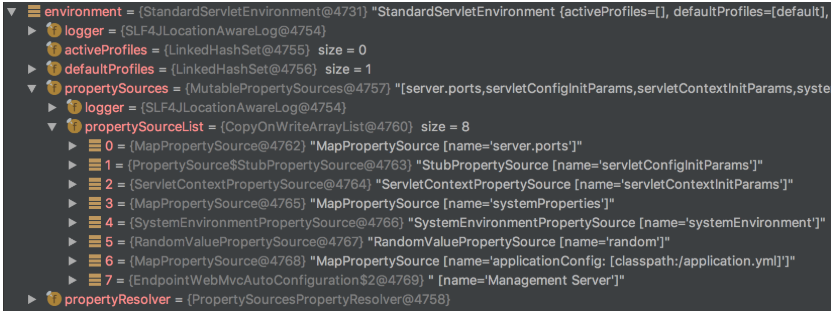
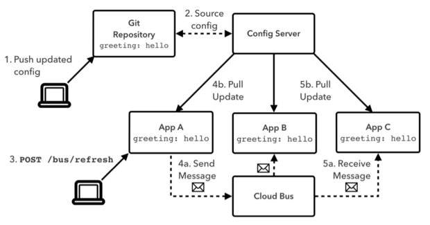

Spring Cloud Config 개념 훑어보기
들어가기
Twelve-Factor App 에서 환경 설정 외부화 항목이 있는데, 이를 구현한 여러 컴포넌트 중 Spring 에서는 Spring Cloud Config 를 제공하고 있다. 하지만, 이넘이 Spring Boot 에서만 동작해서 Spring Framework 에서도 사용하기 위해 내부 원리를 파악하고 구현한 내용을 정리해 본다.
Spring Cloud Config 란
Spring Cloud Config 는 Twelve-Factor App 에서 환경 설정 외부화를 담당하는 컴포넌트다. 일반적으로 JAVA 웹어플리케이션에서 프로젝트내에서 소스와 환경정보를 application.properties 나 application.yml 파일로 분리한다. 하지만, 클라우드 환경에서 서비스는 더욱 잘게 쪼개지고 인스턴스 개수는 수십수백개로 늘어나는데 환경 정보 변경을 위해 새롭게 빌드, 배포하는 것은 경쟁에 뒤쳐지는 요소가 된다. 이를 해결하기 위해 환경 설정을 프로젝트에서 떼어내서 외부에서 중앙 집중 관리를 하게되고 이를 구현한 여러 컴포넌트 중 Spring 에서는 Spring Cloud Config 를 제공하고 있다.
Spring Cloud Config 개념
Spring Environment
스프링의 Environment 클래스는 스프링에서 여러 properties 값과 profile 정보를 통합해서 자동으로 생성되는 빈이다. 아래의 코드와 같이 사용하면 원하는 정보를 가져올 수 있다.
@Component
public class MyClass {
@Autowired
private Environment environment;
public void myMethod() {
System.out.println(String.format("appName : %s", environment.getProperty("app.name")));
System.out.println(String.format("appVersion : %s", environment.getProperty("app.version")));
System.out.println(String.format("appBaseKey : %s", environment.getProperty("app.base-key")));
}
}
아래의 그림을 보면 Environment 클래스는 propertySource 의 집합체임을 알 수 있다.

예를 들어, propertySourceList 인덱스 0번에 보이는 server.ports propertySource 에 server.port=8080 이라고 설정하고, 인덱스 6 번의 application.yml 에는 server.port=9090으로 설정했다고 하자. 이런 경우, 아래와 같은 코드를 실행하면 어떤 값이 조회될까?
String port = environment.getProperty("server.port");
environment 클래스는 property 값을 조회할 때, propertySourceList 의 인덱스 순서대로 탐색한다. 먼저 인덱스 0번 인 server.ports propertySource 를 뒤져보고 값이 없으면 인덱스 1 인 servletConfigInitParams propertySource 를 뒤져본다. 이런식으로 원하는 값이 나올때까지 인덱스를 올려가면서 탐색한다. 중간에 값을 찾게되면, 후순위의 propertySource 는 탐색하지않고 값을 return 한다. 즉, server.port 의 값으로 8080 이 조회되고, 인덱스 6번 application.yml 에 설정된 값은 무시한다.
Configuration Service 는 앞서 설명한 Spring Environment 클래스의 특성을 활용해서 제공되는 서비스다. 중앙 컨피그 서버에서 환경정보(propertySource)를 가져오고 이를 propertySourceList 인덱스 0번에 밀어넣는 것이다.
Spring Cloud Bus
환경정보를 어떻게 변경하는지 알았다면, 이제 어떻게 환경정보 변경 이벤트를 Application 에 전달하는지 알아보자. Spring Cloud Bus 는 분산 시스템의 노드를 간단한 메시지 브로커(RabbitMQ , Kafka)와 연결하는 컴포넌트다. MQ 를 사용해본 사람이면 바로 눈치를 챌 것이다. 환경정보 변경 이벤트가 메시지 브로커를 통해 각 Application 에 전달되고 이를 구독하는 서비스 인스턴스들이 각자 Config Server 에 새로운 환경정보를 요청하고 반영하는 구조다.

Spring Framework 3.x ~ 4.x Support
Spring Cloud Config 는 Spring Boot 에서 동작한다. 앞서 소개한 두 가지 개념을 이해하고 Config Client, Message Queue Client 를 구현하면 Spring Framework 에서도 사용이 가능하다. 크게 네 가지 포인트를 생각해서 구현해야 한다.
Spring Cloud Config Server
Spring Boot 에 적용해서 운영한다.
환경정보 변경 이벤트 트리거
환경정보를 Git, Redis, JDBC 등 어디에 저장하든 변경을 했을 때, 이벤트를 발행해야 한다. 대부분의 블로그 글을 보면 Git 으로 예를 들어서 설명한다. 필자의 경우에는 JDBC 기반으로 환경정보를 관리했다. 그래서 Admin Web 을 만들어서 환경 정보를 변경하면 자연스럽게 이벤트를 발행하게 했다.
Spring Cloud Config Client
Config Server 에 환경 정보를 요청하고 (propertySourceList 인덱스 0번에)반영하는 Config Client 구현이 필요하다. 구현된 Config Client 는Application 이 시작할 때, 그리고 변경 이벤트를 수신했을때, 환경정보를 갱신하는데 사용된다. Application 이 시작할 때는 ApplicationContextInitializer 구현하면 된다.
Message Queue Consumer
모든 서비스의 공통 환경 정보, 각 서비스의 공통 환경 정보 그리고 서비스의 인스턴스 마다 달라질 수 있는 환경 정보까지 고려해서 Exchange, Topic, routing key 를 설계하고 구현해서 Application 에 추가해야 한다. 별 생각이 만들면, 필요없는 변경 이벤트도 수신해서 Config Server 에 요청을 하게 되니 네트워크 트래픽이 늘어난다.
- 서비스가 부팅될 때, 각 서비스는 자신만의 고유한 routing key를 가지고 있는 queue 를 생성하고 이를 rabbitMQ 의 메시지 브로커 exchange 에 binding
- Admin Web 에서 변경 이벤트가 발생하고 이를 수신해야 할 서비스의 routing key 를 메시지에 설정해서 exchange 에 전송
- exchange 는 해당 routing key 를 가지고 있는 서비스의 queue 에 메시지를 전송
- 서비스의 Consumer 는 메시지를 구독하고 Config Client 를 사용해서 환경 정보를 갱신
대략 이런 흐름을 타게된다.